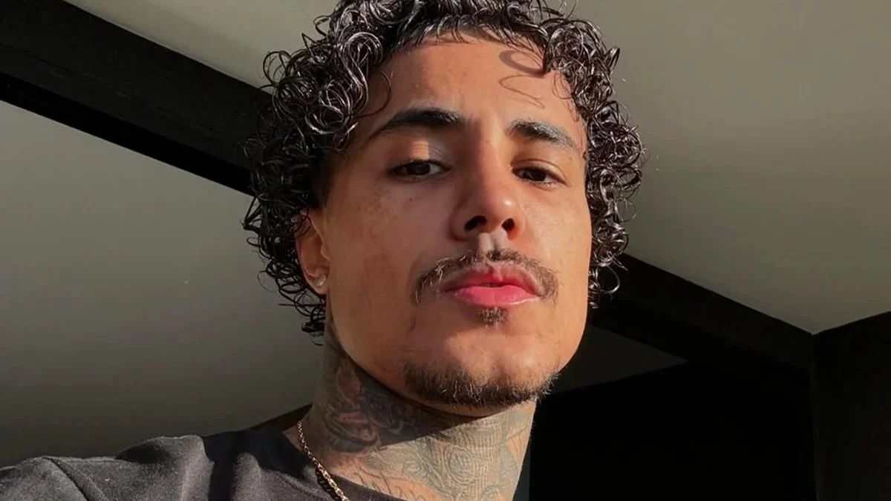
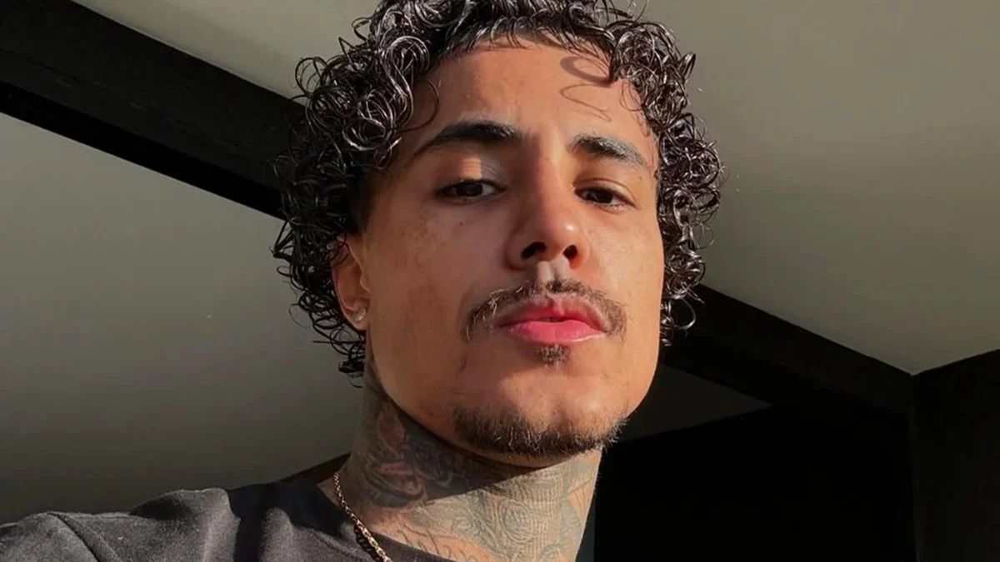

MC livinho
“Algumas coisas não são pra entender, simplesmente vou viver.”
A flor do meu jardim
A mais bela rosa
Meu anjo, meu querubim
A ti dedico esta rosa
Especialmente de um jeito, tão sensual
um cantor, compositor e ex-futebolista brasileiro que atuava como atacante.
@CanalMCLivinhooficial
Meu Instagram:
MClivinho
 

Pausa na carreira
Últimas notícias sobre o cantor
companheira
>